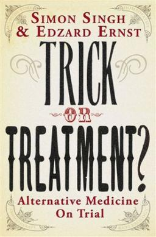

Trick or Treatment? Alternative Medicine on Trial (North American title: Trick or Treatment: The Undeniable Facts
about Alternative Medicine)[1] is a 2008 book about alternative medicine by Simon Singh and Edzard Ernst.
Overview
>
The book evaluates the scientific evidence for acupuncture, homeopathy, herbal medicine, and chiropractic, and briefly
covers 36 other treatments. It finds that the scientific evidence for these alternative treatments is generally
lacking. Homeopathy is concluded to be completely ineffective: "It's nothing but a placebo, despite what homeopaths
say"
Although Trick or Treatment presents evidence that acupuncture, chiropractic and herbal remedies have limited
efficacy for certain ailments, the authors conclude that the dangers of these treatments outweigh any potential
benefits. Such potential risks outlined by the authors are contamination or unexpected interactions between components
in the case of herbal medicine, risk of infection in the case of acupuncture and the potential for chiropractic
manipulation of the neck to cause delayed stroke.
The book is very critical of Prince Charles' advocacy of alternative medicine and the actions of his now-defunct
The Prince's Foundation for Integrated Health. Trick or Treatment is dedicated, in an ironic fashion, to the Prince.
Reception
The book received generally good reviews. The New England Journal of Medicine's review said this about the authors:
"Simon Singh is a physicist and science journalist, and his coauthor, Edzard Ernst, is a physician and professor of
complementary medicine. Ernst is one of the best qualified people to summarize the evidence on this topic." The Daily
Telegraph found the book to be "a clearly written, scrupulously scientific examination of the health claims of key
areas of alternative medicine: acupuncture, homeopathy, chiropractic therapy and herbal medicine. The results are
stark. In no case, apart from in some limited ways in herbal medicine, do any of these 'therapies' work. On the
contrary, they can be life-threatening." The journal Nature tempered a generally positive review with a concern
that the authors' sense of certainty "mirrors that of the proponents of alternative therapies, leaving each position
as entrenched as ever."
Trick or Treatment drew criticism from consumers and practitioners of alternative therapies. The British Journal
of General Practice published a review by Jeremy Swayne (former dean of the Faculty of Homeopathy) that was
critical of the book and its argument.
A review by Harriet A. Hall on Quackwatch stated that some negative reviews of Trick or Treatment demonstrated "an
appalling poverty of thought"; articulating that since the reasoning behind the author's conclusions is solid,
critics instead deny the methods of science, misrepresent the book's contents and use ad hominem attacks against the
authors.

Author : Simon Singh, Edzard Ernst
Country : United Kingdom
Language : English
Subject : Alternative medicine
Publisher : Bantam Press
Publication date : 2008